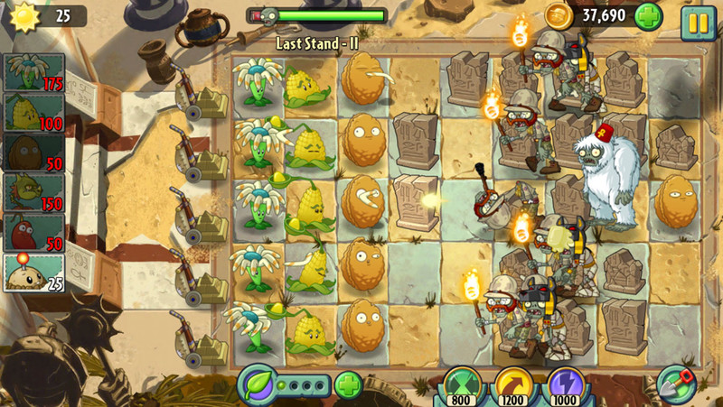
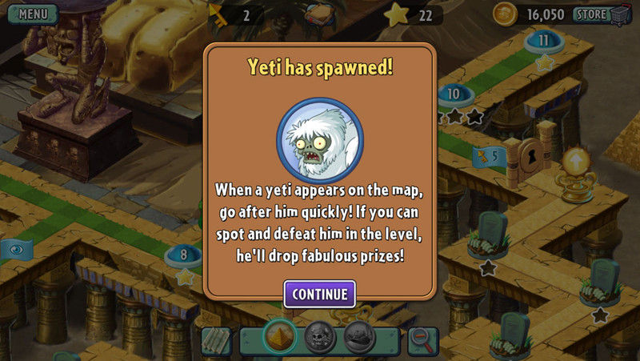

Strategies and Trivias
Strategies
Plants vs. Zombies 2 is the sequel to Popcap's original, amazing, mega-hit, but it's also a completely new, completely different thing. It's freemium now, which means it's free to play, but it tries to encourage you to pay for extras via in-app purchase (IAP). Some people love that model. Some people hate it. We're not here to judge. We're just here to help you make the most of Plants vs. Zombies 2 no matter how you choose to play... or pay. And that means, of course, we're giving you our absolute best tips, tricks, and out-and-out cheats!
- Maximize your Sunflower plant power!
Just like the first Plants vs. Zombies, Sunflowers are incredibly important. You want to aim for 2 rows of Sunflowers on each level, so they can support all the rest of your plant purchasing. Combine them with Potato Mines to cover your Sunflower planting, and you're pretty much set!
- When supplies are limited, get the most bang for your plant bucks

On levels where money or plants are limited, place plants that have area-of-effect attacks - Threepeater, Snapdragons, etc. - in lanes 2 and 4 and they'll cover the whole lawn for you.
- Use plant food on a plant to to get an instant attack

You can use plant food to make a plant that's still in the middle of its refresh time "wake up" and attack immediately. This is especially useful for Coconut Cannons. Note: This trick won't keep a plant "awake", it'll go back to its refreshing sleep immediately after its attack is over.
- Kill the app to reshuffle the Purple World deck
Don't like the cards you're dealt in the Purple World level? No problem. Just hit the Home button to exit Plants vs. Zombies 2, then double-click the Home button to open multitasking, then either touch and hold the Plants vs. Zombies 2 icon until it jiggles and tap the X to kill it (iOS 6), or grab the Plants vs. Zombies 2 card and toss it away (iOS 7). Once that's done, re-launch Plants vs. Zombies 2, and you'll have a whole new deck of cards to choose from!
- Use Bonk Choy and Spikeweeds to survive Pirate World
If you're having trouble surviving Last Stand III in the Pirate World, try this formation. Using only Bonk Choy and Spikeweeds, you'll be able to complete the level without even looking. The Spikeweeds don't get eaten so the damage the zombies without ever having to be replaced. Any zombies that make it to the end get boxed into oblivion by the Bonk Choys.
- Escape the level to prevent loss of a treasure yeti

If you are about to lose a level with the Treasure Yeti zombie, or if he is about to escape, you can hit Restart to redo the level and the Yeti and his treasure will be waiting for you when you come back.
- Complete the level to get your Treasure Yetis treasure

Don't think you can simply kill the yeti, get your treasure, and immediately exit the map without completing the level. PVZ2 don't play that. In order to get your happy lunch box of treasure, you need to both kill the yeti and complete the level.
- Use Kernel-pults plants vs. Seagull Zombies
The best way to knock a Seagull Zombie into the water, if they're flying over the sea, is by using a Kernel-pult. So, if you see Seagull Zombies in the line-up for a level, make sure you arm yourself with a Kernel-pult!
- Know your zombie patterns
Zombies always attack in the same pattern, so if you make a mistake, remember the pattern for when you set up to replay the level. For example, if a regular zombie starts in lane 1, then another comes in lane 4, then another in lane 6, they'll do the same thing when you replay the level, and you can set up your plants in lane 1, 4, and 6, to take care of them.
- Always have a roof-top plant catapult, especially a Kernel-pult
In Plants vs. Zombies 2, it's always beneficial to have at least one rooftop plant (Melon-pult, Cabbage-pult, Kernel-pult, etc.) on hand. When you use plant food on them, they will hit every zombie on screen. I usually prefer the Kernel-pult as it launches butter and immobilizes the zombies, giving you more time to implement your other strategies.
Trivias
Almanac
The almanac is an in-game guide that keeps track of the plants and zombies the player encounters, providing both gameplay information and humorous biographies. Once unlocked, it can be accessed from the main menu, from the pause menu, and from the plant selection screen preceding each level. Plant entries are unlocked as soon as the player unlocks the Plant, but Zombie entries, while unlocked as soon as the player sees a Zombie, remain blank until the player has survived one level with that zombie in it.
Puzzle Mode
Puzzle Mode is unlocked after the completion of the Adventure Mode. Puzzle Mode include two different types of puzzles. The first requires the player to break open vases which can either include zombies or plants. The player must successfully break all of the vases and kill all of the zombies. There are 9 different finite levels and one endless. The second mode requires the player to play the role of the zombie and assault cardboard cutout plants. The objective is to break through the defences and consume 5 brains on the other side of the plants. This also includes 9 different finite levels and one endless.
Survival Mode
Survival mode sets the player up against multiple waves of zombies. The first five levels include each venue (Day, Night, Pool, Fog, Roof) and send five waves of zombies. The second set of five levels include the same five venues and ten waves of zombies. The final level provides an endless wave of zombies.
Store
The player can use coins collected during normal gameplay to purchase items. During the game's second chapter, a character named Crazy Dave will open his shop: Crazy Dave's Twiddydinkies. This allows the player to purchase extra items to make the game's demands a little easier on them. The most expensive items in the store are generally the extra seed slots, which allow the player to bring more types of seeds (and therefore have a bigger variety of plants) in a given level. Other upgrades include upgraded versions of items that must be planted over existing plants; for example, planting an upgrade onto Repeater plants will cause them to fire four shots at a time instead of two. The cheapest upgrades in the store are generally temporary; for $200, a rake can be purchased for the next three levels that will appear randomly on the map and kill the first zombie to step on it.
Zen-Garden
Starts with two Marigold flowers that need to be tended. Additional plants are collected by playing mini-game, puzzle, and survival modes. All plants require regular watering and fertilizer to grow. These activities reward the player with small amounts of money and a larger amount if the plant reaches its full size. Once full-grown plants also require bug-spray and music to remain happy for a day. Doing so nets the player a fairly large reward. Apart from the standard Zen-Garden a mushroom garden, aquarium, and the tree of wisdom are also provided. The mushroom garden allows mushroom plant types to grow further and the aquarium does the same for aquatic plants. The tree of life grows as tree-food is placed upon it, handing out advice for every growth spurt.